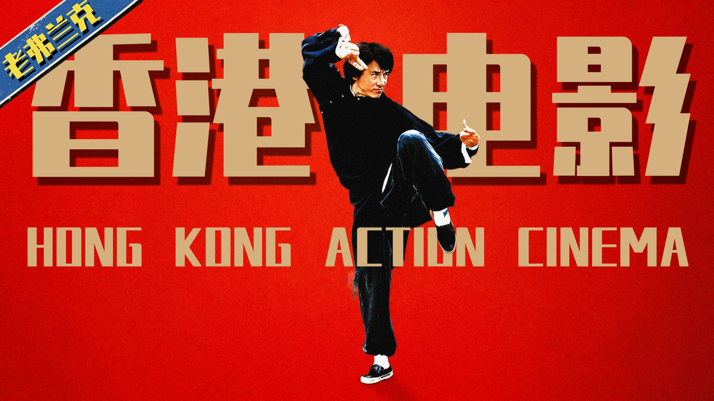

我的挚友，我需要你的三连。 bgm： Magic Ways 塑料般的爱 Flashpoint 英雄故事 Nothing Left to Decide - Ryan McCaffrey_Go By Ocean Welcome Horizons 魔兽世界-酒馆小调 じてんしゃで ゴー! Hope feat. Denise Sherwood 部分参考资料：（太多了简介放不下，放置在视频结尾22 ：50 处左右的位置）
香港电影曾是全球动作电影最严厉的父亲，代表了整个亚洲的流行文化。
其实到今天很多年轻的观众已经很难真正理解七八十年代的香港电影对于亚洲乃至全世界到底意味着什么了。
你会发现它不仅是全球动作电影最严厉的父亲，而且还代表了整个亚洲的流行文化。
李小龙在短短20个月内引爆全球功夫热潮，让好莱坞开始系统性重视动作设计。
他凭一己之力，让刚脱离邵氏成立嘉和的邹文怀迅速崛起，打破了邵氏的垄断地位。
所以从此以后，好莱坞才逐渐有了系统性的动作设计这个概念。
成龙通过功夫喜剧和搏命演出，成为全球最知名的华人演员，并迫使好莱坞尊重华人创作权。
如果说李小龙的电影是功夫文化打出的一记迅猛直拳，那么成龙的电影就像是一套令人眼花缭乱的连招，让世界彻底爱上了功夫。
《红番区》在亚洲上映以后，主流的这几个票仓包括中国大陆全都爆了。
《红番区》的成功迫使好莱坞放权，华人创作者开始主导动作设计，引发‘Hong Kongification’。
红番区虽然不是合拍片，但他的爆火让好莱坞看清了现实，逐渐才把核心的制造权放了出来。
想要动作戏出彩，就必须雇佣华人班底，已经成了行业共识。
甄子丹在21世纪撑起华语动作电影门面，并鼓励谷垣健治独立创作，延续港片血统。
甄子丹不同于成龙李连杰那种出道就爆红的类型，他属于相当大器晚成的演员了。
他不仅撑起了21世纪华语动作电影的门面，还鼓励一直跟着他的谷垣健治尝试脱离自己独立创作。
香港动作电影虽已落幕，但其创新已成为全球电影工业的默认标准，持续影响世界。
真正成功的文化输出，到最后往往都会归于平淡，因为当它真正改变了某些标准之后，人们就会适应它。
在几十年后的今天，当我们再次走进电影院的时候，还依然生活在它留下来的世界里。